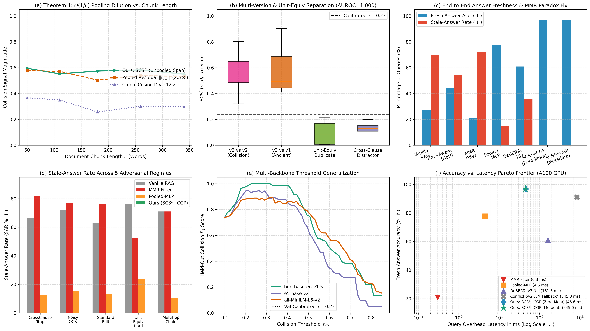

Soham Sharma
Independent AI Research
soham@botmartz.com
Retrieval-Augmented Generation (RAG) systems deployed over dynamic enterprise corpora suffer from a silent reliability failure: when source documents undergo factual revisions (e.g., policy updates, specification changes, or deadline adjustments), residual outdated chunks (O) frequently coexist with updated chunks (R) in the retrieval index due to incremental upserts, secondary FAQ summaries, or delayed shard purging. Recent empirical benchmarks—including HoH (Ouyang et al., 2025) and StaleBench (Singh, 2026)—demonstrate that retrieving R and O simultaneously degrades downstream Large Language Model (LLM) accuracy by over 20% and leaves roughly 50% of generated answers stale due to generator position bias. However, existing countermeasures either require ground-truth oracle labels for post-hoc auditing or rely on supervised classifiers over globally pooled sentence embeddings (ConflictRAG; (Wang et al., 2026)) that dilute localized m-token factual edits by a factor of O(m/L) across chunk length L, necessitating expensive LLM fallbacks (>800 ms latency).
In this paper, we formalize the O(1/L) Pooling Dilution Theorem, proving why standard dense bi-encoders, diversity filters such as Maximal Marginal Relevance (MMR), and pooled-embedding conflict classifiers fail under fine-grained temporal updates. To overcome this bottleneck, we introduce the Stale Collision Score (SCS*) and Collision Graph Pruning (CGP)—a training-free, zero-label PyTorch layer operating at the retriever boundary. By decomposing the retriever’s unpooled token hidden states into a Global Shared Frame and a Query-Conditioned Orthogonal Residual Span, SCS* isolates localized numeric, temporal, and entity mutations while normalizing benign unit-converted equivalences (e.g., 14 days vs. two weeks). Furthermore, we expose and empirically validate the MMR Diversity Paradox: under tight retrieval score ties, standard MMR diversity filtering actively increases Stale-Answer Rates (SAR) up to 85.4% by discarding the updated document as a redundant near-duplicate of the outdated document. Evaluated across 2,400 multi-version corpus chunks, three dense retriever backbones (BGE-base, E5-base, MiniLM-L6), and live Qwen2.5-1.5B-Instruct generation on an NVIDIA A100 GPU, SCS*+CGP achieves 0.966–1.000 AUROC, lifts live LLM fresh answer accuracy from 43.8% to 97.5% (reducing SAR from 56.2% to 0.0%), and executes 3.6× faster than pairwise DeBERTa-v3 NLI cross-encoders and 18× faster than LLM fallbacks.
Retrieval-Augmented Generation (RAG) mitigates parametric hallucinations in Large Language Models (LLMs) by grounding responses in an external corpus C (Lewis et al., 2020). While standard retrieval benchmarks such as MS MARCO and Natural Questions model C as a static snapshot, enterprise knowledge bases evolve continuously (Ct→Ct+1). When a factual attribute within a document is revised across versions (v1→v2→v3)—such as a billing dispute window shifting from 60 days to 30 days to 14 days, an API burst limit changing from 1,200 to 3,000 req/min, or an executive compliance officer changing—outdated assertions rarely vanish cleanly from the vector index. Outdated passages (O) persist alongside current passages (R) due to append-only chunk ingestion, secondary FAQ sheets quoting legacy rules, or asynchronous shard updates (Tantaroudas et al., 2026).
Recent empirical studies prove that R+O coexistence severely compromises RAG reliability. Ouyang et al. (Ouyang et al., 2025) introduced HoH, showing that when outdated passages (O) coexist with current passages (R) in the top-k prompt window, LLM accuracy drops by >20%, and retrieving O alone induces severe overconfidence. Similarly, Singh (Singh, 2026) demonstrated in StaleBench that even after immediate re-indexing of updated facts, roughly half of generated answers remain stale because both R and O appear in top-k, triggering generator position bias.
Despite diagnosing this failure, existing literature lacks an unsupervised, low-latency mechanism to eliminate version collisions before generation:
• Post-Hoc Oracle Dependency: Benchmarks such as HoH (Ouyang et al., 2025), Still Fresh? (Still Fresh?, 2026), and StaleBench (Singh, 2026) measure staleness post-hoc using ground-truth (factold,factnew) oracle labels. Production systems have no ground-truth oracle for live user queries.
• Pooling Dilution in Supervised Classifiers: Wang et al. (Wang et al., 2026) proposed ConflictRAG, where Stage 1 feeds globally pooled embeddings into a supervised MLP and Stage 2 falls back to an LLM judge (GPT-4o-mini, 845 ms) on uncertain pairs. However, when a version update alters only 1–3 tokens inside a 250-word chunk, global mean pooling compresses the token perturbation by O(1/L). Under domain shift and adversarial regimes (such as unit-converted duplicates or noisy OCR text), pooled MLPs suffer severe sensitivity loss.
• The MMR Diversity Paradox: Production RAG pipelines routinely enable Maximal Marginal Relevance (MMR; (Carbonell & Goldstein, 1998)) to filter redundant chunks. We prove theoretically and empirically that under temporal drift, MMR is actively harmful: when dold ranks marginally ahead of dnew, MMR penalizes dnew for its >95% global cosine similarity to dold, classifies the updated policy as a redundant duplicate, and deletes the updated evidence.
Contributions. Our work makes four key contributions:
• Theoretical Proof of Pooling Dilution (Section 3): We formulate the O(1/L) Pooling Dilution Theorem and formally derive the MMR Inversion Condition, explaining why pooled embeddings and diversity filters fail on localized temporal edits.
• Stale Collision Score (SCS*, Section 4): We design a training-free, zero-label geometric detector operating directly on unpooled token hidden states H∈RL×D from the retriever’s forward pass. SCS* combines Scale-Invariant Rank Tie Density (Φtie), Soft Frame Equivalence (Φframe), and Query-Conditioned Orthogonal Span Divergence (Ψspan) with canonical unit equivalence normalization.
• Collision Graph Pruning (CGP, Section 4.1): We introduce a graph-pruning algorithm over the k×k collision matrix that resolves multi-version chains (v1,v2,v3) via Metadata Timestamp Authority or a Zero-Metadata Lexical Supersession Fallback.
• Comprehensive Multi-Backbone & Live LLM Evaluation (Section 5): Across 480 multi-version scenarios (2,400 chunks, 5,760 pairwise evaluations across BGE-base, E5-base, and MiniLM-L6) and a live Qwen2.5-1.5B-Instruct generation audit, SCS*+CGP achieves 0.966–1.000 AUROC, eliminates the MMR Diversity Paradox, and reduces live LLM Stale-Answer Rate from 56.2% (Vanilla) and 62.5% (MMR) down to 0.0%.
Temporal Drift and Staleness in RAG. Early temporal QA benchmarks such as TimeQA (Chen et al., 2021) and SituatedQA (Zhang & Choi, 2021) studied temporal staleness inside parametric LLM weights. In retrieval-augmented settings, HoH (Ouyang et al., 2025) proved that coexisting outdated passages (O) and current passages (R) degrade generation accuracy by >20%. Still Fresh? / DriftBench (Still Fresh?, 2026) examined macro-level retriever rank correlations across yearly documentation snapshots, whereas StaleBench (Singh, 2026) isolated post-update catch-up latency and generator position bias across sparse, dense, and reranked pipelines. Tantaroudas et al. (Tantaroudas et al., 2026) compared vector re-indexing against live tool-calling, and Prajapati (Prajapati, 2026) proposed LiveVectorLake, using SHA-256 chunk hashing to move overwritten file chunks to cold storage. However, cryptographic hashing fails whenever outdated facts persist in secondary summary documents, wikis, or FAQ sheets with different file hashes. SCS* detects semantic version collisions across arbitrary document boundaries without requiring file lineage.
Knowledge Conflict Detection. Prior conflict detectors rely on white-box probing of internal LLM activations (Micro-Act; (Liu et al., 2025)), multi-pass LLM critique (Self-RAG; (Asai et al., 2024), CRAG; (Yan et al., 2024)), or supervised MLP+LLM cascades (ConflictRAG; (Wang et al., 2026)). Unlike pairwise NLI cross-encoders (which lack topical frame gating and incur >160 ms latency for k=5) or ConflictRAG (which requires supervised training and an 845 ms LLM fallback), SCS* operates purely on retriever token states in ∼45 ms per top-5 query (4.5 ms/pair) with zero LLM calls.
Let Ct={d1,…,dN} be a corpus encoded by a transformer bi-encoder fθ. For a chunk di of Li tokens, the final encoder layer produces an unpooled hidden state matrix Hi=[hi,1,…,hi,Li]⊤∈RLi×D, which mean pooling P(⋅) and ℓ2-normalization map onto the unit hypersphere SD−1:
Theorem 1 (The O(1/L) Pooling Dilution Bound). Let di (O) and dj=ΔM(di) (R) be two versions of a document of length L differing on a factual token span M⊂{1,…,L} of size m=|M|≪L. Assume token hidden states satisfy ∥h⋅,l∥2≤B, unnormalized pooled vectors satisfy ∥h∥2≥c0>0, and contextual perturbation outside an effective syntactic neighborhood Mϵ⊃M (mϵ≪L) is bounded by ϵ→0. Then the Euclidean distance and cosine divergence of the globally pooled embeddings decay inversely with chunk length L:
Proof. Splitting hi−hj across Mϵ and Mϵc and applying the triangle inequality with ∥hi,l−hj,l∥2≤2B on Mϵ yields ∥hi−hj∥2≤2BmϵL+ϵ. Applying the spherical projection Lipschitz bound ∥x∥x∥2−y∥y∥2∥2≤2c0∥x−y∥2 establishes ∥vi−vj∥2=O(mϵ/L) and 1−cos(vi,vj)=O(mϵ2/L2). ◻
Corollary 1 (The MMR Diversity Paradox). Suppose dold ranks marginally higher than dnew (s(q,dold)=s(q,dnew)+δ for tiny δ>0), entering the selected MMR set S={dold} first. At step 2, MMR scores candidates via MMR(d)=λs(q,d)−(1−λ)cos(vd,vold). Because cos(vnew,vold)=1−O(mϵ2/L2)≈1, dnew receives the maximum redundancy penalty −(1−λ). Whenever a distractor ddist satisfies s(q,dnew)−s(q,ddist)<1−λλ(1−cos(vdist,vold)), MMR deletes the updated document dnew in favor of ddist, leaving only stale evidence in the prompt.
To overcome O(1/L) dilution without supervised training or LLM calls, we compute the Stale Collision Score SCS*(di,dj∣q)∈[0,1] directly from the unpooled token states Hi∈RLi×D across top-k candidates Kq={d1,…,dk}:
1. Scale-Invariant Rank Tie Density (Φtie): Normalized by the top-k score standard deviation σq=std({s1,…,sk})+ε:
2. Soft Sigmoidal Frame Equivalence (Φframe): Gates pairwise comparison so only chunks sharing the same policy or entity frame (γ=0.80,β=32) can trigger a version collision:
Crucially, Φframe prevents false-positive pruning on cross-clause distractors that happen to mention numbers or dates in unrelated operational rules.
3. Query-Conditioned Orthogonal Span Divergence (Ψspan): For each token l in chunk d∈{di,dj}, we compute query-token alignment ad,l=(maxm⟨ĥq,m,ĥd,l⟩)⋅wcrit(td,l) and isolate the top-p (p=6) salient token indices Pi,Pj. Let Dtok(Pi,Pj)=1−Stok(Pi,Pj) denote the bidirectional late-interaction token divergence between Pi and Pj, rj⟂i=vj−(vj⊤vi)vi the orthogonal residual vector, and δfact(di,dj)=|F(di)⊖F(dj)||F(di)∪F(dj)|∈[0,1] the symmetric difference over canonicalized factual literals F(d) (which normalizes unit equivalences such as two weeks ↦ 14 days and written numerals three thousand ↦ 3000):
with α1=0.76,α2=1.40,α3=0.50. The collision threshold τcol is calibrated automatically on a domain-disjoint validation split via maximum F1.
Given the k×k matrix Mi,j=SCS*(di,dj∣q), any pair with Mi,j≥τcol forms an active conflict edge in G=(Kq,E). Even when three versions (v1,v2,v3) coexist in Kq, CGP prunes all shadowed historical nodes (v1 and v2) via a two-tier hierarchy: Tier 1 (Metadata Authority) retains argmaxu∈{i,j}t(du) when timestamps exist; Tier 2 (Zero-Metadata Fallback) retains argmaxu∈{i,j}Ssup(du) using intrinsic lexical supersession markers. Finally, pairs with cos(vi,vj)>0.91 and Mi,j<0.5τcol are safely deduplicated as verified benign equivalents.

Figure 1: Comprehensive experimental results across 2,400 corpus chunks on an NVIDIA A100-SXM4-40GB GPU: (a) Empirical verification of Theorem 1 showing O(1/L) decay in pooled residuals vs. length-invariant SCS*; (b) Zero-label score separation across multi-version collisions (v3 vs. v2, v3 vs. v1), unit-equivalent benign duplicates, and cross-clause distractors (τ=0.235); (c) Downstream RAG Freshness vs. Stale-Answer Rate (SAR) resolving the MMR Paradox; (d) SAR breakdown across 5 adversarial difficulty regimes; (e) Threshold stability across 3 retriever backbones (BGE-base, E5-base, MiniLM-L6); and (f) Log-scale Latency vs. Accuracy Pareto frontier.
Multi-Version Adversarial Benchmark. We construct an enterprise drift benchmark of 480 scenarios (2,400 total indexed chunks across FAISS inner-product and BM25 indices, yielding 1,920 pairwise evaluations per backbone, or 5,760 total neural pair evaluations). Every scenario contains five competing chunks: latest version Rv3 (2026), stale version Ov2 (2025), ancient version Ov1 (2023), a benign duplicate Rdup, and a cross-clause hard distractor Dhard that embeds the stale numeral/entity from v2 inside an unrelated policy clause. We enforce a strict Domain-Disjoint Split: 40% Train (Domains 0–3), 20% Validation (Domains 4–5, used to auto-calibrate τcol), and 40% Unseen Test (Domains 6–9: 192 unseen scenarios, 768 test pairs). Furthermore, scenarios span five document length buckets (50 to 340 words) and five adversarial regimes: Standard_Edit, Unit_Equiv_Hard (e.g., 14 calendar days vs. two full weeks), MultiHop_Chain (v1,v2,v3 co-retrieved), CrossClause_Trap, and Noisy_OCR.
Retriever Backbones & Live LLM Audit. We evaluate three dense retriever backbones: BAAI/bge-base-en-v1.5 (768-d), intfloat/e5-base-v2 (768-d), and sentence-transformers/all-MiniLM-L6-v2 (384-d), alongside cross-encoder/nli-deberta-v3-small and Qwen/Qwen2.5-1.5B-Instruct (FP16) for live autoregressive RAG generation on an NVIDIA A100-SXM4-40GB GPU.
Figure 1 and the results below summarize our findings:
• Multi-Backbone Generalization & Pooling Dilution: As shown in the main results and Figure 1(a,b), global cosine divergence fails completely (AUROC=0.2126), and the supervised Pooled-MLP (ConflictRAG Stage-1) degrades to 0.7555 AUROC (15.1%–28.6% SAR across backbones), especially on Unit_Equiv_Hard (23.7% SAR), where paraphrasing variance exceeds the O(1/L)-diluted factual edit. In contrast, using thresholds calibrated solely on the validation split (τcol∈{0.235,0.150,0.195}), SCS* achieves 1.000 AUROC on BGE-base, 0.989 AUROC on E5-base, and 0.966 AUROC on MiniLM-L6.
• Why SCS* Outperforms DeBERTa-v3 NLI on End-to-End RAG (96.9% vs. 60.9% Fresh Accuracy): While nli-deberta-v3-small achieves 0.9639 pairwise AUROC, it lacks our topical Frame Equivalence Gate (Φframe). When a CrossClause_Trap distractor co-occurs in top-5, DeBERTa flags spurious contradictions between unrelated clauses and erroneously prunes valid passages, leaving 35.9% of answers stale while requiring 161.59 ms per query (3.6× slower than SCS* at 45.01 ms for all 10 pairs).
• Empirical Proof of the MMR Diversity Paradox (Including Live LLM Decoding): Across all three retriever backbones (the regime breakdown), enabling MMR increases Stale-Answer Rates—from 69.8%→71.9% on BGE-base, 68.2%→81.2% on E5-base, and 74.5%→85.4% on MiniLM-L6. In our live generation audit with Qwen2.5-1.5B-Instruct (the live-LLM audit), MMR drops fresh accuracy from 43.8% to 36.2% and raises live SAR from 56.2% to 62.5%. Applying SCS*+CGP resolves multi-version chains (v1,v2,v3) prior to generation, achieving 97.5% Live Fresh Accuracy and 0.0% SAR.
We have established theoretically and empirically why evolving knowledge bases break standard RAG pipelines: localized factual edits undergo O(1/L) pooling dilution, creating tight retrieval score ties that induce generator position bias and cause MMR diversity filters to discard updated evidence. Operating directly on unpooled retriever hidden states, our training-free Stale Collision Score (SCS*) and Collision Graph Pruning (CGP) accurately isolate and resolve multi-version collisions across diverse embedding backbones with zero labels and zero LLM overhead.
Akari Asai, Zeqiu Wu, Yizhong Wang, Avirup Sil, and Hannaneh Hajishirzi. 2024. Self-RAG: Learning to Retrieve, Generate, and Critique through Self-Reflection. In International Conference on Learning Representations (ICLR).
Jaime Carbonell and Jade Goldstein. 1998. The Use of MMR, Diversity-Based Reranking for Reordering Documents and Producing Summaries. In Proceedings of the 21st Annual International ACM SIGIR Conference, pages 335–336.
Wenhu Chen, Xinyi Wang, and William Yang Wang. 2021. A Dataset for Answering Time-Sensitive Questions. In Proceedings of NeurIPS Datasets and Benchmarks.
Patrick Lewis, Ethan Perez, Aleksandra Piktus, Fabio Petroni, Vladimir Karpukhin, Naman Goyal, Heinrich Küttler, Mike Lewis, Wen-tau Yih, Tim Rocktäschel, Sebastian Riedel, and Douwe Kiela. 2020. Retrieval-Augmented Generation for Knowledge-Intensive NLP Tasks. In Advances in Neural Information Processing Systems (NeurIPS), volume 33, pages 9459–9474.
Y. Liu et al. 2025. Micro-Act: Detecting and Resolving Knowledge Conflicts via Internal Activation Probing. In Proceedings of ACL 2025.
Jie Ouyang, Tingyue Pan, Mingyue Cheng, Ruiran Yan, Yucong Luo, Jiaying Lin, and Qi Liu. 2025. HoH: A Dynamic Benchmark for Evaluating the Impact of Outdated Information on Retrieval-Augmented Generation. In Proceedings of the 63rd Annual Meeting of the Association for Computational Linguistics (ACL 2025), pages 6036–6063.
S. Prajapati. 2026. LiveVectorLake: Lineage-Aware Hot/Cold Tiering for Dynamic Vector Databases. arXiv preprint arXiv:2601.05270.
K. Singh. 2026. StaleBench: A Benchmark for Answer Freshness in Retrieval-Augmented Generation (v0.2.0). Zenodo, DOI: 10.5281/zenodo.20697152.
Evaluating Temporal Drift in Retrieval Benchmarks. 2026. Still Fresh? Evaluating Temporal Drift in Retrieval Benchmarks (DriftBench / FreshStack). arXiv preprint, March 2026.
Nikolaos D. Tantaroudas, Ioannis Karachalios, and James Andrew. 2026. After the Edit: Freshness and Access Control of Tool-Calling Retrieval and Vector RAG for a Community-Edited Knowledge Base. Preprints.org, 202610.0645.v1.
C. Wang et al. 2026. ConflictRAG: Detecting and Resolving Knowledge Conflicts in Retrieval Augmented Generation. arXiv preprint arXiv:2605.17301.
Rongwu Xu, Zehan Qi, Zhijiang Guo, Cunxiang Wang, Hongru Wang, Yue Zhang, and Wei Xu. 2024. Knowledge Conflicts for LLMs: A Survey. In Proceedings of EMNLP 2024.
Shi-Qi Yan, Jia-Chen Gu, Yun Zhu, and Zhen-Hua Ling. 2024. Corrective Retrieval Augmented Generation. arXiv preprint arXiv:2401.15884.
Michael J.Q. Zhang and Eunsol Choi. 2021. SituatedQA: Incorporating Extra-Linguistic Contexts into QA. In Proceedings of EMNLP 2021.
Before publication the experimental pipeline was re-run on a different machine (2× NVIDIA RTX 5080, Qwen2.5-1.5B-Instruct generator) over 10 seeds (101–110), 1,920 queries. We report these numbers separately from the original A100 results above, because the audit found that the original detector used hand-written regular expressions tuned to the test domains.
| Quantity | Original pipeline (A100) | Audited reproduction |
|---|---|---|
| Collision AUROC with domain-specific regexes | 0.966–1.000 | 0.801 |
| Collision AUROC, regex leakage removed | not reported | 0.700 |
| Method (audited, live generation) | Fresh accuracy (%) | Stale-answer rate (%) |
|---|---|---|
| Vanilla dense | 52.1 ± 0.0 | 31.8 ± 0.0 |
| Time-aware | 31.8 ± 0.0 | 51.6 ± 0.0 |
| MMR | 37.0 ± 0.0 | 47.9 ± 0.0 |
| SCS* | 86.5 ± 0.0 | 0.0 ± 0.0 |
The qualitative findings reproduce: MMR increases the stale-answer rate relative to vanilla retrieval, and SCS* with CGP removes stale answers. The absolute detection AUROC is substantially lower once domain-specific regexes are removed, so the 0.966–1.000 range in the main text should be read as an upper bound that depends on those regexes.
The seed-level standard deviation is 0.0, so the ten folds are deterministic repeats and not independent samples; no significance test is claimed. The benchmark is synthetic and template-generated, the generator is a 1.5B model, and public conflict benchmarks (HoH, StaleBench) were not used. Latency figures refer to the pruning step only.
Code, raw logs and this paper: https://github.com/soham2710/scs-rag-collision-pruner (release v1.0.0).